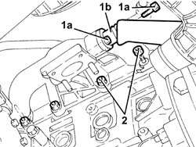
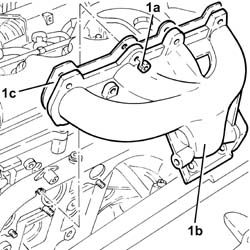
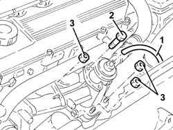
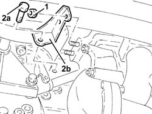
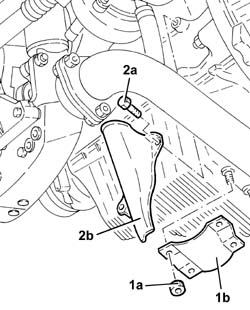
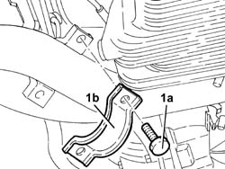
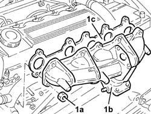
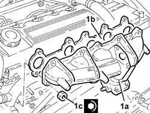
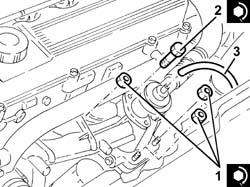
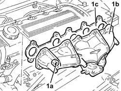

1072C10 exhaust manifold - r + r and replace seal
- Path
- Procedures > 10 ENGINE > 1072 INLET AND EXHAUST MANIFOLDS > 1072C exhaust manifolds > 1072C10 exhaust manifold - r + r and replace seal
- Kind
- repair procedure (removal / refitting; the operation number is the code)
- Applies to
- engines: 1.9 JTD 8v , 2.4 JTD 10v, 2.4 JTD 20v; all production periods
- Interactive page
- https://sloeber94.github.io/elrnDB-a156/en/#/3237836
Applies to: engines: 1.9 JTD 8v ; all production periods; only with equipment: Euro 3
 Removing
Removing
 Refitting
RefittingPosition the vehicle on the ramp.
Ensure that the ignition key is in the stop OFF, then disconnect the battery negative terminal.
 | Name | Connector |
|---|---|---|
- | Battery |
Proceed with the removal 1016A10 sound-proofing cover - r + r .
Proceed with the removal 7055B54 under-engine guard - r r .
Proceed with the removal 1064A22 Variable geometry TURBOCHARGER - R.R. .
1. Undo the bolts (1a) and disconnect the exhaust gas intake pipe (1b) from the exhaust manifold.
2. Undo the lower nuts securing the exhaust manifold to the cylinder head.

Applies to: engines: 1.9 JTD 8v ; all production periods; only with equipment: Euro 3
1. Undo the upper nuts (1a) and remove exhaust manifold (1b) complete with gasket (1c).

Applies to: engines: 1.9 JTD 8v ; all production periods; only with equipment: Euro 3
Refitting
RemovingPlace the inlet manifold, complete with a new gasket, back in its housing and fix it tightening the nuts to the recommended torque.
 | Fastening | Component | Ø | Value (daNm) |
|---|---|---|---|---|
- | Nut | EXHAUST MANIFOLD/S | M8 | (Cylinder head side) 2.1 ÷ 2.6 |
Connect the exhaust gas intake pipe to the exhaust manifold and secure with bolts.
Proceed with the refitting 1064A22 Variable geometry TURBOCHARGER - R.R. .
Proceed with the refitting 7055B54 under-engine guard - r r .
Proceed with the refitting 1016A10 sound-proofing cover - r + r .
Connect the battery terminal (-).
Remove the car from the ramp.
Applies to: engines: 1.9 JTD 8v ; production: da 04/98 a 02/99; only with equipment: 115 CV
Removing
RefittingProceed with the removal 1016A10 sound-proofing cover - r + r .
Proceed with the removal 1072C44 exhaust manifold heat shield on bulkhead - r+r .
Proceed with the removal 7055B54 under-engine guard - r r .
Proceed with the removal 1080B40 catalytic pre-converter - r r .
Proceed with the removal 1064A22 Variable geometry TURBOCHARGER - R.R. .
Applies to: engines: 1.9 JTD 8v ; production: da 04/98 a 02/99; only with equipment: 115 CV
Refitting
RemovingProceed with the refitting 1064A22 Variable geometry TURBOCHARGER - R.R. .
Proceed with the refitting 1080B40 catalytic pre-converter - r r .
Proceed with the refitting 7055B54 under-engine guard - r r .
Proceed with the refitting 1072C44 exhaust manifold heat shield on bulkhead - r+r .
Proceed with the refitting 1016A10 sound-proofing cover - r + r .
Applies to: engines: 2.4 JTD 10v; all production periods
Removing
RefittingPosition the vehicle on the ramp.
1. Disconnect the vacuum intake pipe from the EGR valve.
2. Unscrew the bolts securing the EGR valve to the exhaust manifold.
3. Undo the three bolts indicated, which secure the turbocharger to the exhaust manifold.

Applies to: engines: 2.4 JTD 10v; all production periods
1. Unscrew the turbocharger bracket nuts.
Raise the vehicle.
2. Undo bolts (2a) and remove turbocharger bracket (2b).

Applies to: engines: 2.4 JTD 10v; all production periods
1. Undo nuts (1a) and remove the reinforcement bracket (1b).
2. Undo the bolts (2a) and remove heat shield (2b) protecting the oil outlet pipe from the turbocharger.

Applies to: engines: 2.4 JTD 10v; all production periods
1. Undo the bolts (1a) and remove collar (1b) supporting the front exhaust pipe section.

Applies to: engines: 2.4 JTD 10v; all production periods
Remove the remaining bolt securing the turbocharger to the exhaust manifold.
Lower the vehicle.
1. Undo the nuts (1a) and remove exhaust manifold (1b) complete with gasket (1c).

Applies to: engines: 2.4 JTD 10v; all production periods
Refitting
Removing1. Fit the exhaust manifold (1a), complete with a new gasket (1b), and fix it tightening the nuts (1c) to the recommended torque.
| Fastening | Component | Ø | Value (daNm) |
|---|---|---|---|---|
1c | Nut | EXHAUST MANIFOLD/S | M8 | 2.1 - 2.6 |

Applies to: engines: 2.4 JTD 10v; all production periods
Raise the vehicle.
Tighten the nut fixing the turbocharger to the exhaust manifold to the recommended torque.
| Fastening | Component | Ø | Value (daNm) |
|---|---|---|---|---|
- | Bolt | TURBOCHARGER | M8 | 2.1 - 2.6 |
Fit the collar supporting the front exhaust pipe section and secure with bolts.
Fit the turbocharger oil outlet pipe protective heat shield and secure using the bolts.
Fit the reinforcement bracket and fix it using the bolts.
Fit the turbocharger bracket and secure it using the bolts.
Lower the vehicle.
Tighten the nuts securing the bracket to the turbocharger.
1. Tighten the remaining bolts securing the turbocharger to the exhaust manifold to the specified torque.
| Fastening | Component | Ø | Value (daNm) |
|---|---|---|---|---|
1 | Bolt | TURBOCHARGER | M8 | 2.1 - 2.6 |
2. Tighten the bolts securing the EGR valve to the exhaust manifold to the specified torque.
| Fastening | Component | Ø | Value (daNm) |
|---|---|---|---|---|
2 | Bolt | EGR VALVE | M8 | 2.1 - 2.6 |
3. Connect the vacuum intake pipe to the E.G.R. valve.

Applies to: engines: 2.4 JTD 10v; all production periods
Remove the car from the ramp.
Applies to: engines: 2.4 JTD 10v; all production periods; only with equipment: Euro 3
Removing
RefittingPosition the vehicle on the ramp.
Ensure that the ignition key is in the stop OFF, then disconnect the battery negative terminal.
| Name | Connector |
|---|---|---|
- | Battery |
Proceed with the removal 1016A10 sound-proofing cover - r + r .
Proceed with the removal 7055B54 under-engine guard - r r .
Proceed with the removal 1064A22 Variable geometry TURBOCHARGER - R.R. .
1. Undo the bolts (1a) and disconnect the exhaust gas intake pipe (1b) from the exhaust manifold.
2. Undo the lower nuts securing the exhaust manifold to the cylinder head.
Applies to: engines: 2.4 JTD 10v; all production periods; only with equipment: Euro 3
1. Undo the upper nuts (1a) and remove exhaust manifold (1b) complete with gasket (1c).

Applies to: engines: 2.4 JTD 10v; all production periods; only with equipment: Euro 3
Refitting
RemovingPlace the inlet manifold, complete with a new gasket, back in its housing and fix it tightening the nuts to the recommended torque.
| Fastening | Component | Ø | Value (daNm) |
|---|---|---|---|---|
- | Nut | EXHAUST MANIFOLD/S | M8 | (Cylinder head side) 2.1 ÷ 2.6 |
Connect the exhaust gas intake pipe to the exhaust manifold and secure with bolts.
Proceed with the refitting 1064A22 Variable geometry TURBOCHARGER - R.R. .
Proceed with the refitting 7055B54 under-engine guard - r r .
Proceed with the refitting 1016A10 sound-proofing cover - r + r .
Connect the battery terminal (-).
Remove the car from the ramp.
Applies to: engines: 2.4 JTD 20v; all production periods
Removing
RefittingProceed with removal 1016A10 sound-proofing cover - r + r .
Proceed with removal 1048A50 air inlet pipe to turbo charger - r + r .
Proceed with removal 7055B54 under-engine guard - r r .
Proceed with removal 1076B70 exhaust pipe between pre-catalytic converter and catalytic converter - r r .
Proceed with removal 1080B40 catalytic pre-converter - r r .
Proceed with removal 1064A24 variable geometry turbocharger exhaust manifold assembly sleeveleading to exhaust pipe r r .
Proceed with removal 1064A26 variable geometry turbocharger exhaust manifold sleeve leading to exhaust pipe dismantle at bench .
Applies to: engines: 2.4 JTD 20v; all production periods
Refitting
RemovingProceed with refitting 1064A26 variable geometry turbocharger exhaust manifold sleeve leading to exhaust pipe dismantle at bench .
Proceed with refitting 1064A24 variable geometry turbocharger exhaust manifold assembly sleeveleading to exhaust pipe r r .
Proceed with refitting 1080B40 catalytic pre-converter - r r .
Proceed with refitting 1076B70 exhaust pipe between pre-catalytic converter and catalytic converter - r r .
Proceed with refitting 7055B54 under-engine guard - r r .
Proceed with refitting 1048A50 air inlet pipe to turbo charger - r + r .
Proceed with refitting 1016A10 sound-proofing cover - r + r .
Refill the engine cooling system with coolant 0010T20 coolant change .
Topics linked from this page (11)
- 0010T20 coolant change
- 1016A10 sound-proofing cover - r + r
- 1048A50 air inlet pipe to turbo charger - r + r
- 1064A22 Variable geometry TURBOCHARGER - R.R.
- 1064A24 variable geometry turbocharger exhaust manifold assembly sleeveleading to exhaust pipe r r
- 1064A26 variable geometry turbocharger exhaust manifold sleeve leading to exhaust pipe dismantle at bench
- 1072C44 exhaust manifold heat shield on bulkhead - r+r
- 1076B70 exhaust pipe between pre-catalytic converter and catalytic converter - r r
- 1080B40 catalytic pre-converter - r r
- 7055B54 under-engine guard - r r
- A1B Battery ( BATTERY NEGATIVE )